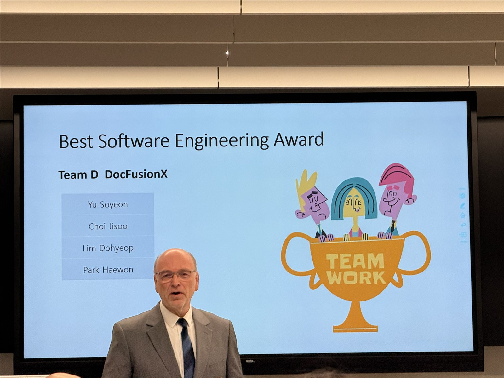
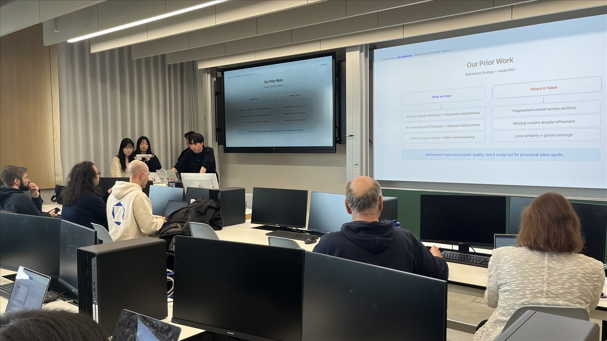

THU AICOSS HACKATHON · 2026년 2월
DocFusionX
긴 PDF의 절 구조를 활용해 질문에 필요한 근거를 찾는 GraphRAG 팀 프로젝트입니다.
팀 수상
GraphRAG
하이브리드 검색
본인 기여
- 초기 데모 제작 및 테스트. 기본 RAG로 데모를 만들고 EU AI Act PDF를 입력해 질의응답을 테스트했습니다.
- 검색 결과 공동 분석. 팀원들과 응답을 검토하면서, 유사한 텍스트 조각만 검색하면 문서의 다른 절에 있는 관련 근거를 놓칠 수 있다는 점을 논의했습니다.
- 하이브리드 검색 제안 및 공동 구현. 팀원들과 RAG 검색 방식을 학습하고, 회의에서 벡터 검색과 BM25 키워드 검색을 결합하는 방식을 제안해 함께 구현했습니다.
팀 결과물
팀은 검색으로 찾은 텍스트 조각을 시작점으로 앞뒤 조각과 같은 절의 텍스트를 함께 찾아 문맥을 확장하는 GraphRAG 데모를 발표했습니다. THU AICOSS 해커톤에서 팀으로 Best Software Engineering Award를 수상했습니다.
대회 현장




배운 점
DocFusionX는 대규모 언어 모델(LLM)을 처음 다룬 프로젝트였습니다. 수업에서 배운 파이프라인 설계와 Ollama를 활용한 자연어처리 실습이 프로젝트 구조를 잡는 데 도움이 됐습니다. 처음에는 정해진 파이프라인 하나를 잘 구현하면 된다고 생각했습니다. EU AI Act PDF로 기본 RAG를 테스트하고 팀원들과 답변을 검토하면서, 질문과 비슷한 문단을 찾아도 다른 절에 있는 근거는 빠질 수 있다는 점을 배웠습니다.
팀 회의에서 누락된 근거를 왜 놓쳤는지 살펴보며 검색 방식마다 어떤 정보를 잘 찾는지 논의했습니다. 벡터 검색과 BM25를 결합하는 과정에서, 문서의 특성과 실제 실패 사례를 바탕으로 구성 요소를 선택하는 법을 배웠습니다. 짧은 개발 기간에도 각자 공부한 내용을 공유하고 같은 데모를 보며 개선 방향을 결정한 경험은, 팀이 기술적인 판단의 근거를 함께 쌓는 방법을 보여줬습니다.